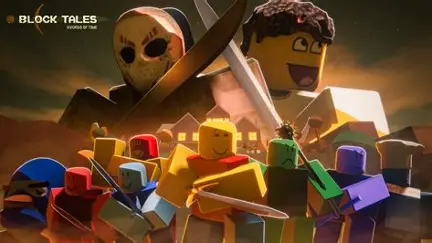

Um jogo de rpg de turno do roblox criado por Spaceman Moonbase que atualmente tem 5 capitulos, mais para ser adcionado no futuro.
Nesse jogo você, depois de tentar salvar David de um ataque, é teletransportado para o passado e a pedidos de Shedletsky tem que conseguir 7 espadas para poder derrotar o vilão.